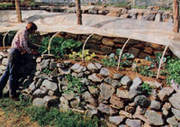
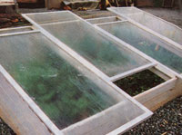
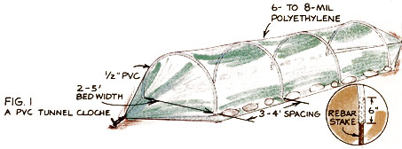
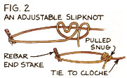
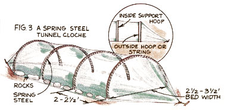
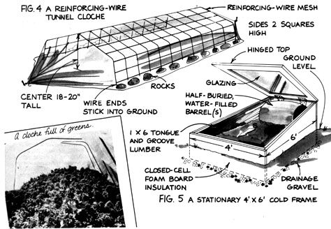
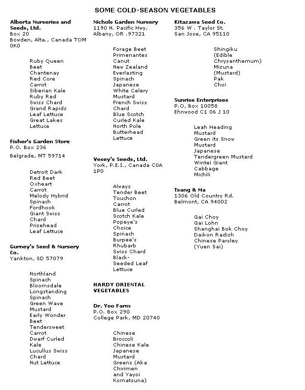

All right, so don't have a $5,000 solar greenhouse. That doesn't mean you can't grow your very own fresh winter greens.
Fall. A few lights frosts, some frantic scrambling to pick everything salvageable from the garden, and then- wham ! A hard freeze hits. All your plants die. Time to call it quits... another gardening year is finished.
Ahhh, but wouldn't it be nice if you could keep your crops growing? If you could step outdoors in the winter and harvest a few vegetables to sustain you through those long months of preserved and purchased produce?
Well, the good news is that you can do just that. The better news is that doing so won't cost you an arm and a leg; we're not talking here about building a full-sized solar greenhouse. And the best news is that-if you hop to it-you can do it this very fall, in time to have your own cold-weather harvest.
This article will tell you how to build MOTHER's gardeners' two favorite low-cost, season-extending devices . . . how to use and maintain them . . . and what crops to raise in them.
Collect some 2' pieces of rebar, 5' to 10' lengths of 1/2" PVC pipe, one sheet of 6- to 8-mil clear plastic, and two pieces of rope, and you've got all the ingredients for a tunnel cloche. It's easy to build, portable-you can even construct it right over a bed of already established fall greens-and quite inexpensive (it'll cover 48 square feet for around $15).
And this simple crop saver really works! Last fall Bob Kornegay tunnel-cloched a 20-square-foot bed of spinach behind the low-cost permaculture homestead at MOTHER's Eco-Village. The greens-which had been sown outdoors in September-made it fine through the winter in our 4,200-degreeday climate . . . including the record-breaking night when the mercury hit 16°F below zero! During those cold months, they grew sparsely: just enough so Bob could harvest fresh leaves for salads about every other day. By the end of February, though, he was giving salad leaves away. And come March, he had all that he could cook up, eat raw, and freeze!
Fig. 1 shows the parts of a PVC tunnel cloche. To put one together, all you have to do is drive two-foot lengths of rebar (iron reinforcing rod) into the ground every three or four feet on either side of the growing bed. Bend a PVC hoop over each set of rebar pieces. (The exact length of the PVC will depend on the width of your bed: five feet of pipe for a two-foot-wide bed, eight feet for a three-foot bed, nine for four, and ten for five.) Drape your plastic on top and then secure it at the base to keep that cold night air out. You can do this by simply weighting down the sides and ends with rocks, or by bunching the ends together with ropes and snugly securing those lines. Bob has found that the only time he really needs to tie his cloches' ends is during March, when our area receives strong spring winds. Then he uses an adjustable slipknot-shown in Fig. 2-to keep those cords tight.
There are other simple ways to make tunnel cloches. You can make your hoops of spring steel poked into the ground. Lay your plastic over those, then run a second hoop or string right next to each of the supporting ones to hold the plastic in place (see Fig. 3). Or you can use reinforcing wire mesh arched over the bed (cut the material so both sides have lots of wire ends to poke into the ground) and cover that with plastic (Fig. 4).
Tunnel cloches are definitely the "hot" plant protector at the Eco-Village these days-we're using them more and more. But we're far from abandoning our other small-scale season extender: the cold frame.
A cold frame, essentially, is a bottomless box (usually of wood) that faces south, is higher in the back (the north side), and is covered with glass or plastic. Cold frames are durable, attractive, easy to use, and-because of their increased insulation-probably better at protecting plants from extreme cold than the all-plastic cloches. On the other hand, they do cost more to construct than tunnel cloches: The materials for the 4' X 6' model shown in Fig. 5 cost around $150, not counting the glazing. And although you build such a miniature greenhouse from the bottom up, you should design it from the top down . . . in other words, it's easier to get your glass (or other glazing) first and build the frame to fit it. If you can scrounge up some usable windows or glass door panels, you'll have trimmed a considerable expense.
You'll want to build your cold frame so the top slants southward, but don't worry about trying to get the "best" sun-catching angle; that's usually not critical. Do be sure to paint the interior white to help diffuse the admitted light, though.
Unless you'd prefer to have a portable cold frame, you'll want to lay some type of foundation. You can use concrete block, rot-resistant wood (such as locust, cedar, or cypress), or lumber painted with a latex acrylic paint or a homemade preservative of copper naphthenate or linseed oil. (Never use creosote or pentachlorophenol on a cold frame.) Lay this below frost level and insulate it with closed-cell foam board insulation. You might also be wise to place gravel under and around your frame's foundation to improve its drainage and to help protect the wood.
For glazing, use glass if you scrounged up windows . . . 6-mil polyethylene if you want to skimp (and have a very temporary covering) . . . or a fancy fiberglass-reinforced plastic (FRP) if you want something durable (and pricey). Since your biggest heat loss will be through the top of the cold frame, you'd do well to double-glaze the top. One of the most practical and cost-effective ways to do that is to use glass on the top and plastic underneath. The glass will help filter ultraviolet rays, which deteriorate plastic. And if the glass should ever break, the plastic may help catch the pieces!
You'll need to devise some way to open the windows. You can either hinge them in the back or-as we did-build channels for the units so you can slide them up and down (which gives finer ventilation control). In addition, you may want to lay down pliable weather stripping where the glazing meets the sides of your frame to help seal that junction.
Up to a certain point, plants double their growth rate for every 10°F rise in soil temperature, so anything you do to help keep the ground warm is going to pay off. For starters, insulate the sides of the frame with some closed-cell foam board . . . or simply pile hay or even soil around it.
You can further improve the frame's thermal performance by adding some heat-retaining mass to it. If you insulated the foundation, you're effectively using the interior soil itself as thermal mass. You can also stack 30-gallon water-filled drums, painted black, along the back wall, either on the ground or partly buried in the soil.
And if you really want to help heat the frame bed, bury a mixture of fresh manure and straw or wood shavings under the bed's soil . . . and create what's called a hotbed. The decomposing pile will generate heat for your plant's soil. Don't use manure alone for this purpose: It'll cook too hot and too quickly, possibly harming your plants with excess ammonia gas.
If you're new to this art of gently coaxing plants to grow out-of-season, you need to know that such "solar-intensive" gardening is demanding. So start small-just try out one tunnel cloche or cold frame this season-and construct your plant shelter as near to your house as possible.
Since you will be working with a limited amount of sheltered space, do everything you can to utilize it efficiently. Plant in wide beds, not in single rows, and eat all you harvest (including broccoli leaves, carrot tops-in salads-and cut-up greens stems). Just as important, create the best possible soil for your crops. Compost and fertilizing amendments are vital, since most of the commonly grown winter vegetables are heavy feeders and will be growing under somewhat stressful conditions.
Maintaining proper moisture levels is another way of promoting maximum growth and reducing plant stress. You'll probably need to water deeply only once a week in the fall and spring . . . and even less during the coldest months of winter. You certainly don't want to overwater, since that can lead to damping-off and other diseases.
Just as critical as the amount of liquid you provide is when you supply it and what temperature it is. Never water a cold frame or cloche in the evening; that would only make the plants colder during the coming night. If you have no means of heating your liquid, the best time to water is in the morning-then the heat of the day can help warm the water, air, and soil together. (The water will also provide some additional thermal mass to store that day's heat.) Far better is heating the liquid before you give it to the plants. Hot tap water will do fine. Or simply leave plastic gallon jugs, painted black, in your plant shelter. On a good sunny day, those jugs may reach 80 to 85°F by late morning. The water will then be ready to use . . . probably just at the time your frame needs to be opened up for venting, anyway!
That beings us to the worst inconvenience of such solar-intensive gardening: venting. We know, we know-you went to all this work to create a plant environment that captures and retains as much heat as possible. Ironically, though, you've got to let some of that warmth out on many sunny days. Otherwise, your plants may get too hot, the gases they outbreathe may reach harmful levels, and the interior humidity may get high enough to create blissful conditions for molds, mildews, and fungi.
So whenever the temperature inside your frame or cloche begins to soar, you've got to crack it open a bit (don't just fling it open, as the sudden cold may shock your plants). Some days you may find yourself making see eral trips to ventilate and close systems-a prime reason for locating the winter garden as close to your house as possible.
As Susan puts it, managing winter frames and cloches requires "being married to the garden." Just keep reminding yourself of the extra-fresh food you get to eat at a time of year when store-bought produce is low-quality, shipped long distances, and heavily sprayed.
Plants that have long maturity dates or require pollination to set fruit are poor choices for frame and cloche gardening. Cabbages, broccoli, and cauliflower handle cold weather better but take up a lot of space for what they yield. Root crops such as carrots and parsnips can be good choices. In most climates, however, you can plant these in summer-we start our winter carrots in mid-July-cover then, in late fall with several inches of straw, and pull back that covering whenever you want to harvest some. (They'll be easier to find under that mulch if you plant them in little "channels" spaced 5" or 6" apart across the bed.) "Storing" root crops under mulch leaves your frames and cloches free for other crops.
So what are the best choices for sheltered growing? The most obvious selections are the "pick and come again" leaf crops such as mustard, Swiss chard, ruby chard, parsley, kale, collards, spinach, and hardy leaf lettuces. But greens aren't the only good choices: New research has shown that many oriental vegetables are wonderfully adapted to frame and cloche growing conditions. Bok (or pak) choi, daikon radish, michili, gai lohn, shingiku, and wong bok cabbage are just a few of these plants. If you're not already familiar with using these in stir-fried dishes, salads, soups, casseroles, quiches, and more, now may be just the time to experiment. (See the sidebar for some suggested cold-season varieties and sources.)
Both cloches and cold frames are useful for all seasons of the gardening year. Hardy vegetables planted in the shelters in mid fall may yield abundant, super-early spring produce. Later in the spring, the plant houses can be used to harden of vegetable seedlings and start cuttings of herbs or ornamentals. If you replace the panes or plastic with a gardener's shade cloth, you've got a place to raise summer lettuce. And you can set a cloche or portable cold frame in the garden itself to overwinter half-hardy perennials . . . to dry and warm a section of the garden you want to plant in early spring . . . or to shield some tender transplants you want to gently heel in. (In this last case, try draping a white bed sheet over the frame or cloche for a day or two to moderate both light and heat.)
So why wait? Start this fall with one tunnel cloche or cold frame, and try your own seasonextending garden experiments. If all goes well, while your friends are picking their way through seed catalogs and dreaming of spring, you'll be picking your way through the crops of your own wintertime harvest!
|
 Bob harvests fresh greens from the tunnel cloche. |
 Venting MOM's cold frame. |
 |
|
 |
 |
 |
|
 |
|
|